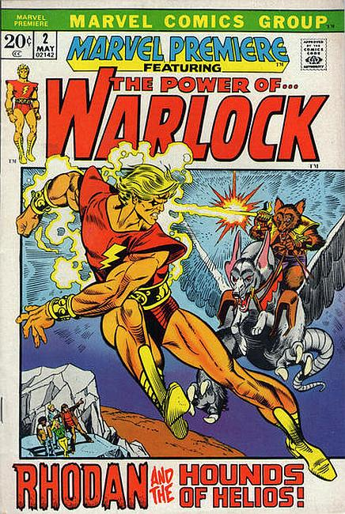

Marvel Premiere #2

Series: Marvel Premiere
Characters: Warlock, Man-Beast
Released: May 1972
Publisher: Marvel Comics
Illustrator: Gil Kane
Writer: Roy Thomas
Story: The Hounds of Helios
Warlock defends Counter-Earth from Man-Beast becomming the planets defender.